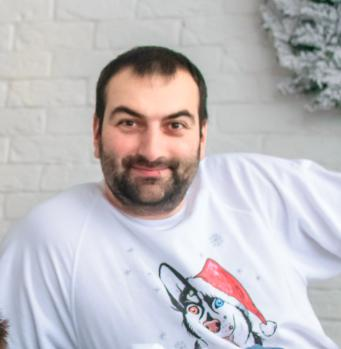
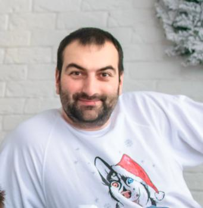

В главных ролях:
Готэм - крупный мегаполис. На его улочках хорошо себя чувствуют представители криминального мира. Здесь делят территорию несколько мафиозных группировок и полно злодеев-одиночек. Брюс Уейн в детстве потерял обоих родителей по вине грабителя. На глазах мальчика произошло трагическое событие, которое оставило след на неокрепшей психике. Рядом с телами родных людей он поклялся, что будет бороться с преступниками.
С тех пор прошло несколько лет. Мальчик возмужал и приступил к выполнению своего плана. Он не обладает сверхъестественными способностями, но ум и рассудительность всегда при нем. Брюс - миллиардер, который может осуществить все свои пожелания. Он создает секретную штаб-квартиру в скале, откуда и начинается его путь супергероя.
Каждую ночь, надев специальный костюм, оснащенный огромным количеством новаторских разработок, темный рыцарь следит за городом. Он стоит на страже порядка, искореняя преступность. Его лицо скрыто маской, а все зовут его Бэтмен, и не знают реального имени. Герою впервые предстоит встретиться с умным и хитрым противником. Он совершает преступления чужими руками и мастерски запутывает следы. Сможет ли Уейн выследить коварного бандита?
«Бэтмен» (англ. The Batman) — предстоящий американский супергеройский фильм, основанный на одноимённых комиксах издательства DC Comics. Картина будет выпущена компанией Warner Bros. и будет перезагрузкой всех фильмов о Бэтмене.
Фильм является десятым по счёту фильмом из Расширенной вселенной DC. Режиссёром и сценаристом фильма выступит Мэтт Ривз, а главную роль исполнит Роберт Паттинсон.
В январе 2019 года было объявлено, что Бен Аффлек не вернётся к роли Бэтмена. В мае того же года стало известно, что роль Бэтмена исполнит Роберт Паттинсон.
В сентябре стало известно, что Джеффри Райт рассматривается на роль Джеймса Гордона.
В октябре к фильму, с ролью
Женщины-кошки, присоединилась
Зои Кравиц, а также
Пол Дано с ролью Загадочника.
В том же месяце Джеффри Райт официально
присоединился к фильму в роли Джеймса Гордона.
В ноябре стало известно, что Колин Фаррелл и Энди Серкис ведут переговоры насчёт участия в фильме с ролями Пингвина и Альфреда Пенниуорта соответственно, тогда как Джереми Стронг отказался от роли Двуликого.
В октябре 2014 года студия Warner Bros. объявила, что в разработке находится сольный фильм о Бэтмене, роль которого вновь исполнит Бен Аффлек. В июле 2015 года сообщалось, что Аффлек ведёт переговоры со студией по поводу постановки фильма и совместного написания сценария с Джеффом Джонсом.
После выхода фильма «Бэтмен против Супермена: На заре справедливости» руководитель агентства WME Патрик Уайтсел подтвердил, что Аффлек написал сценарий для сольного фильма о Бэтмене и в настоящий момент его рассматривают студия и DC. В мае 2016 года Джереми Айронс подтвердил, что он появится в фильме про Тёмного Рыцаря.
На Comic-Con в Сан-Диего в июле 2016 года было официально подтверждено, что Аффлек станет режиссёром картины. В августе 2016 года на одной из страниц Аффлека в социальных сетях был опубликован тестовый материал, в котором был показан персонаж Детстроук. 8 сентября 2016 года Джефф Джонс подтвердил, что Джо Манганьелло сыграет наёмника Слейда Уилсона, который, возможно, станет главным злодеем фильма.
Подпишитесь на обновления